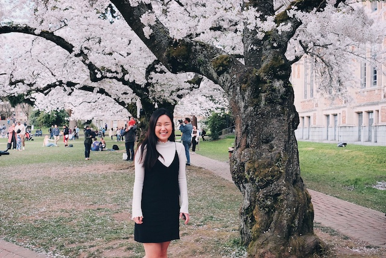

Currently learning to code at Ada Developers Academy. Passionate about creating access and removing barriers to opportunity for everyone.
- Technical Skills
-
Ruby
API
HTML, CSS
- Education
-
Ada Developers Academy Seattle, WA | July '19-Present
- Ada Developers Academy is a year-long, highly selective, intensive software development training school for women and gender diverse people. Ada is tuition-free and consists of 6 months of full-time classroom instruction followed by 5 months of paid industry internship.
University of Washington Seattle, WA | 2010-2015
- Experience
-
Nordstrom Seattle, WA | Aug '17- June '19
Data and systems management SME for internal and external business partners. Manage and maintain enterprise wide product and data integrity; including escalations and error fixes/resolutions.
US Scholars Seoul, Korea | Aug '17- June '19
SAT I & II Instructor